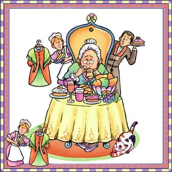

Érase una viejecita sin nadita que comer, sino carnes, frutas, dulces,
tortas, huevos, pan y pez.
Bebía caldo, chocolate, leche, vino, té y café, y la pobre no encontraba
qué comer ni qué beber.
Y esta vieja no tenía ni un ranchito en que vivir, fuera de una casa
grande con su huerta y su jardín.
Nadie, nadie la cuidaba, sino Andrés y Juan Gil, y ocho criados y dos
pajes de librea y corbatín.